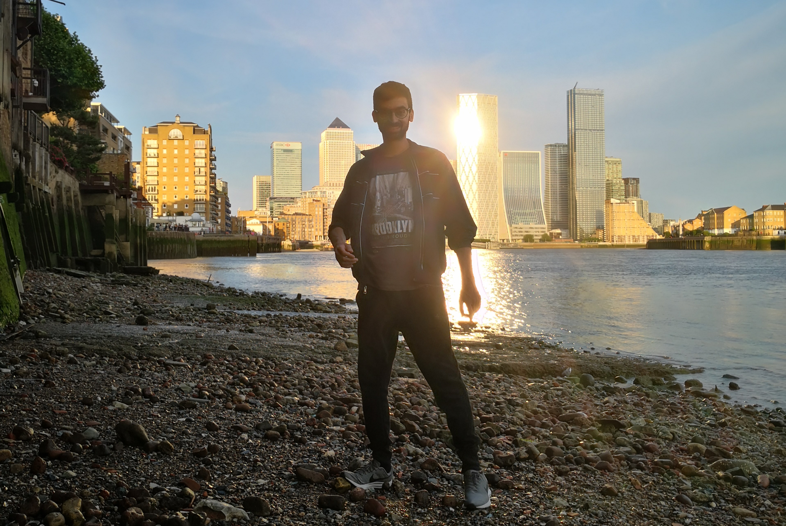

ITA | ENG
☆ C V ☆
✨TITLES✨
- 'Vittorio Emanuele II' High School Degree in Classic Studies: mark of 85 out of 100. This school is deemed one of the best in Naples due to its historical heritage, and the peculiar subjects. I studied ancient Greek and Latin, and opted for the course that stressed English as foreign language.
- 'London Middlesex Univesity' Bachelor Degree (BA Business Management with Spanish): business studies with an extra course that was entirely in Spanish and focused on the entrepreneurial opportunities in Hispanic countries. I graduated after a three year course with a first class degree. I also broke a scoring record within an examination. In general I had the opportunity of mastering my language skills especially in an academic context (↓↓).
- Other Work-related Titles:
- Lifeguard certificate: It allowed me to start to grow and gain my first experiences at work, and later to practice English and Spanish. These steps were fundamental for me to begin my career!
- SIA badge (door-supervisor): I got the training and skillset required to work as a security-guard. Overall it was good knowledge and made me improve my English in a formal and work-friendly context. It was also fun.
✨JOBS✨
LIFEGUARD
Throughout my time in Italy and Spain I had time to take advantage of my certificate, covering the role of sea lifeguard. My most enriching job experience was in the balearic islands, where I had the opportunity of working for 'Marsave SRL', and assisted clients from all over the world. It was a great place to grow and develop Language Skills (go below).
From Unskilled WORK To ADMIN ROLE 💼
Alongside with my studies I managed to carry on some temporary jobs that fitted into my schedule. It was difficult and I take pride in saying that I had to start from humble roles. Berry Recruitment helped me with everything I needed, and eventually offered me to step-up as an administrator. Meanwhile I was still in the midst of my BA at London Middlesex University. It was a path of big achievements for me!
SECURITY-GUARD
Once I had got my SIA badge I was able to cover small roles among various high-profile locations. It was not easy due to the completion of my studies, but I can tell you it was possible and that hard-work is more satisfying!! Here are some pictures of that time in London (↓↓↓).
✨SKILLSETS✨
LANGUAGE SKILLS
-
 ENGLISH: Before enrolling in university I already accomplished an IELTS academic score of 7.5,
which corresponds to a C1, and includes academic writing. From then on, I could just improve my language
skills, and I had to test them in busy/stressful circumstances as well. Well done to me !!
ENGLISH: Before enrolling in university I already accomplished an IELTS academic score of 7.5,
which corresponds to a C1, and includes academic writing. From then on, I could just improve my language
skills, and I had to test them in busy/stressful circumstances as well. Well done to me !!
 Though now I prefer to practice English through reading, listening and writing, since I do not currently live in the UK. When I have the occasion I am happy to have a conversation in spoken English. Certain things will never change! -
 SPANISH: my Spanish is proficient and ready-to-use, yet I presently prefer to speak and think in English than in Spanish.
SPANISH: my Spanish is proficient and ready-to-use, yet I presently prefer to speak and think in English than in Spanish.
COMPUTER SKILLS 💻
I used predominantly Excel, Word, and Canvas/PowerPoint in presentations and reports for work and university. After that, I have developed years of experience in programming: I like both web development than OS/processor ones (i.e. C language, x86 assembly and motorola 68000). I learned all of these languages at my current university in Italy, where I study Computer Engineering. At some of these and other exams I distinguished myself with the highest score. I prefer programming rather than using the PC as an end-user that is unaware of the Magic behind these machines. Now my main interest is web development.
HUMAN VERSATILITY
I am a skilled individual that intends matching language skills with computer science. Can see myself starting as a web developer in order to gain experience and eventually upgrade my career in programming. I have good communication skills, and can be quite versatile. I am great at working in a team, either by taking directions or by taking the lead; I am built for challenges! Furthermore, I do have the great advantage of the English language, useful in official documentations, programming and IA assistance. I do not heavily rely on IA, but I understand the importance of tools such as Microsoft Copilot and ChatGPT.